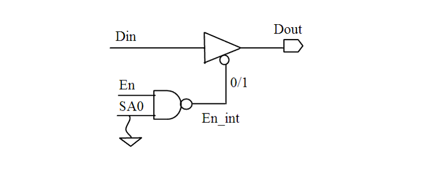

| Description | This rule fires when Leda detects an internally generated output enable signal that is not observable and controllable. Observability and controllability of internally generated output enable signals improve fault coverage in design for test (DFT). |
| Policy | DESIGN |
| Ruleset | DFT |
| Language | VHDL/Verilog |
| Type | Hardware |
| Severity | Error |
This is an example of invalid Verilog code, followed by a circuit diagram that illustrates the problem:
module ntl_dft07_top(En, Din, Dout); input En, Din; output Dout; wire En_int; assign En_int = ~(En & 1'b0); // NTL_DFT07 fires -- En_int SA1, '0' untestable assign Dout = !En_int ? Din : 1'bZ; endmodule